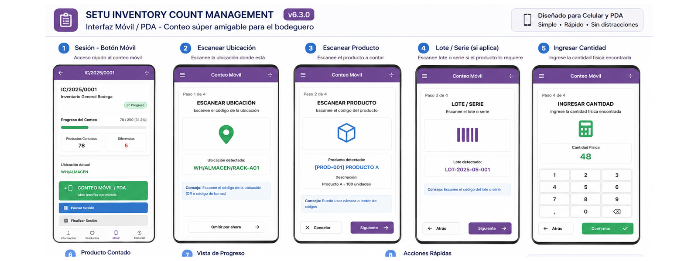
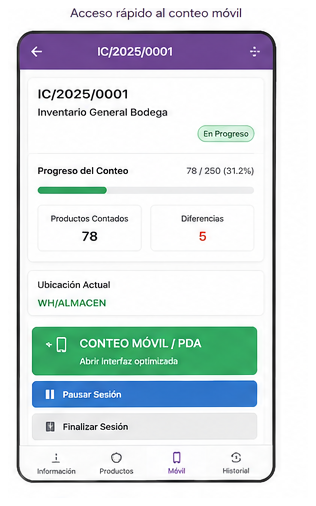
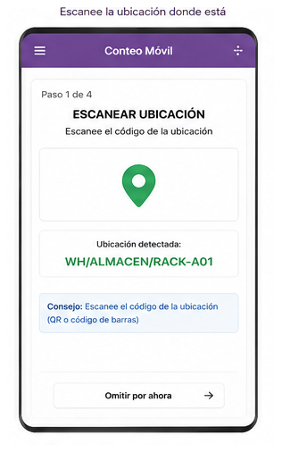
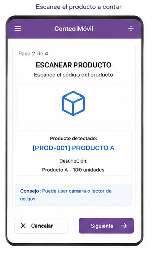
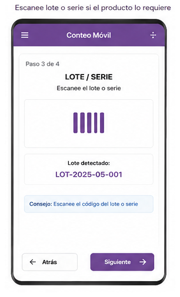
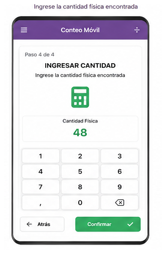
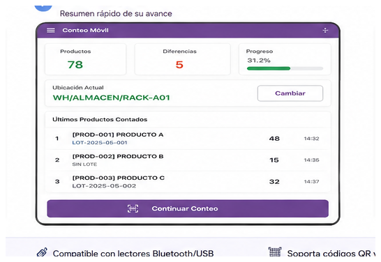
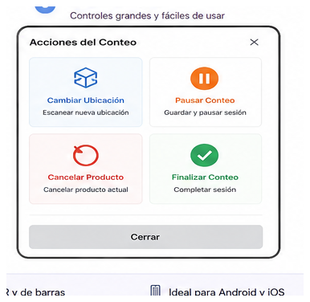

Conteo físico multiusuario con una experiencia optimizada para celular y PDA
Odoo 19 · Versión 6.4.0 · Autor: Oscar Morocho

El contador trabaja en una vista específica que elimina campos administrativos y prioriza solamente lo necesario para avanzar rápido: ubicación, producto, lote/serie, cantidad y progreso.

La sesión ofrece acceso directo al modo Conteo móvil/PDA y muestra progreso sin distraer al operario.

El bodeguero identifica primero dónde está. Esa ubicación queda activa hasta que decida cambiarla.

El mismo motor recibe lecturas desde PDA, lector Bluetooth/USB o lector PDA cuando está disponible.

La trazabilidad forma parte del flujo; los números de serie se controlan individualmente.

Para productos normales o por lote se digita la cantidad total encontrada, evitando escanear la misma referencia N veces.

La pantalla mantiene visible el avance, ubicación activa y últimos artículos registrados.

Cambiar ubicación, cancelar el producto actual, pausar y finalizar están a un toque.
Planificar → Crear sesiones → Contar → Enviar → Revisar → Aprobar / Rechazar → Recontar → Completar → Ajustar inventario
El operario se concentra en contar; el responsable conserva las herramientas de revisión, tolerancia, discrepancias, reconteo, aprobación y aplicación controlada del ajuste.
setu_inventory_count_management · Odoo 19 · Licencia OPL-1